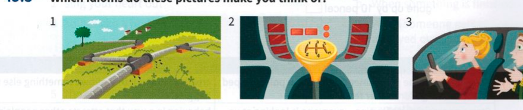

Exercises
45.1 Advertisements often use idioms to sell products. Match each slogan with its text.
- Want to let off steam tonight?
- We're on your wavelength
- State-of-the-art digital technology in your home
- Give us a buzz for lower bills
A
Local Radio is changing, and here at City Radio FM we believe you'll want to listen to us with our new programmes for the autumn.
C
By 2020, most TV channels will no longer broadcast in the traditional way. Buy a new TV set now and you will be ready for the changes.
B
Are you paying too much for your mobile phone? Call us on 07965 34352 and find out how you can pay less.
D
Chatrooms are a great place for saying exactly what you think. If you’ve got things on your mind, join us at We-chat for great, lively debate.
45.2 Agree with what A says. Complete each response with an idiom from the left-hand page.
-
A: Her e-mail caused real problems for our plans, didn't it?B: Yes, it really .........................................
-
A: I think George is beginning to change his mind about joining our committee.B: Yes, he seems to be .........................................
-
A: Wow! Matt really lost his temper last night, didn't he?B: Yes, he absolutely .........................................
-
A: Good. Things seem to be nice and quiet and working smoothly.B: Yes, everything seems to be just quietly .........................................
-
A: It seems there was a misunderstanding between us.B: Yes, I think we .........................................
-
A: I think we should give her a call this evening.B: Yes, it's probably a good idea to .........................................
45.3 Which idioms do these pictures make you think of?

45.4 Rewrite each sentence with an idiom from exercise 45.3.
- It took us a long time to really start to do our work properly and efficiently.
- Mark is one of those people who always knows the road better than the person driving.
- There are plans for a new railway, but it will be some years before the project starts.
45.5 Complete each sentence with a preposition or particle.
- We're ......................................... the same wavelength.
- Everyone needs to let ......................................... steam occasionally.
- You've really put a spanner ......................................... the works.
- Business is ticking ......................................... nicely these days.
- We'll have to put the brakes ......................................... with regard to how much we spend.